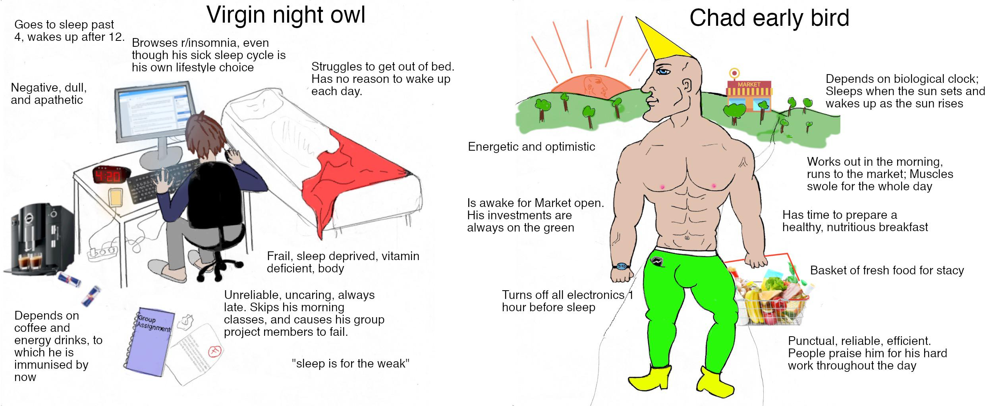

In my experience of reading blog/forum posts about productivity and speaking with friends/colleagues, it turns out there are a lot of ways to be productive, and almost all of them are highly individualized. I've explained my system (this system) to others to get puzzled, disgusted faces staring back at me. I've also been on the sending end of that face after learning about other people's crazy productivity ideas. What is laid out here likely won't work for you entirely, but there may be some helpful pieces of advice or ideas you didn't consider that actually help. (This advice can be applied to any person's productivity advice: just take what works for you and leave the rest, no need to force adopt any practices.)
Time: Organization, Optimization, Reduction
Productivity boils down to the optimization and efficiency of time. The systems, applications, and methods used should attempt to minimize both time and effort spent doing monotonous or tedious tasks. Some general principles:
First, time needs to be organized. This means using a calendar app that can sync to both desktop and mobile devices: Google Calendar (GC, website, Wikipedia), Microsoft Outlook (website, Wikipedia), and Apple's Calendar (website, Wikipedia) are all well-known, popular choices.
GC will be used as an example.
Separate color-coded calendars can be used for each aspect of life, e.g., social activities, course work, chores. This is helpful for a few reasons:
Below is what a typical calendar week looks like for me. (Greyed-out because it was many months ago.)

There are 12 calendars on the left, each with their own notification style:
Everything that needs to be done at a certain time or lasts a certain amount of time gets put on the calendar to remind, help expect what's upcoming, and prevent double-booking.
Knowing where time is going serves as a reminder for exactly just how much time is spent doing something. It's easy to get lost watching YouTube videos, only to look up at the clock and see it's 2 hours later than expected.
RescueTime is free software that automatically tracks apps and websites and sends a weekly report (see below) with a detailed time breakdown.

While RescueTime is good for overall time tracking, only the premium version provides real-time updates as to how much time you are spending on unproductive sites. That's where apps like StayFocusd come in.
StayFocusd allows for daily time tracking on specific sites. With StayFocusd, aggregate time spent on the unproductive sites can be limited. After time runs out, those sites are blocked for the remainder of the active day (unproductive time only contributes to the timer during "Active Hours" on "Active Days").
In the case of completely blocking a website, see the Chrome extension Block Site.
A to-do list (TDL) serves to remind and plan the following day, week, or even month. Any note-taking or word processor will do: Microsoft Word (website, Wikipedia), Microsoft OneNote (website, Wikipedia), and Evernote (website, Wikipedia) are all well-known, popular choices.
Below is what a typical TDL day looks like for for me:

My TDL for a standard day is organized into six sections, each with different subfields:
Below is what a typical TDL week looks like for for me:

My TDL for a standard week is organized into five sections that are almost identical to the day: education, training, daily/social/other, notes, and training (box). I use fields to keep track of my goals for the week, e.g., reach page 300 of the book I'm reading or make sure I'm doing something fun every day.
There are two methods of completing a task:
I prefer the time-based method, as it gives a definite time to stop working and has consistent breaks. I used 50-10 or 75-15 work-break cycles.
Read the essay on time optimization.
The best way to reduce computer task time is through a search app: Alfred (website, Wikipedia) and Quicksilver (website, Wikipedia) are popular applications for MacOS. (Not familiar with Windows or Linux apps.)
These expedite many processes:
Productivity has been found to directly correlate with a variety of health metrics.
Getting high-quality sleep is extremely important for improving productivity. Rosekind et al. 2010 found that "Mean productivity loss (Fig. 2) was significantly higher for the insomnia group (6.1%) than for the at-risk (4.6%) and good-sleep (2.5%) groups (all P < 0.05). The ISS group had an intermediate level of productivity loss (5.5%)." Alhola and Polo-Kantola 2007 found that "SD [sleep deprivation] impairs attention and working memory...[and] long-term memory and decision making".
Plenty of anecdotal evidence (1, 2 (although Walker's book is not worth reading)) is also available.
Sleep hygiene articles below. Notice how consistent the advice is across organizations.
Certain diets can cause sleepiness (including the infamous afternoon slump), decreasing productivity as discussed in the sleep section.
[FINISH]In addition to diet, the amount of mental energy one can expend in a single day is limited. Work that requires intense focus or thinking can leave you feeling exhausted.
From Ericcson et al 1993:
The limited duration of practice is the best evidence of the effort it requires. When individuals, especially children, start practicing in a given domain, the amount of practice is an hour or less per day (Bloom, 1985b). Similarly, laboratory studies of extended practice limit practice to about 1 hr for 3-5 days a week (e.g., Chase & Ericsson, 1982; Schneider & Shiffrin, 1977; compared the efficiency of practice durations ranging from 1 -8 hr per day. These studies show essentially no benefit from durations exceeding 4 hr per day and reduced benefits from practice exceeding 2 hr (Welford, 1968; Woodworth & Schlosberg, 1954). Many studies of the acquisition of typing skill (Baddeley & Longman, 1978; Dvorak et al.. 1936) and other perceptualmotor skills (Henshaw & Holman, 1930) indicate that the effective duration of deliberate practice may be closer to 1 hr per day. Pirolli and J. R. Anderson (1985) found no increased learning from doubling the number of training trials per session in their extended training study. The findings of these studies can be generalized to situations in which training is extended over long periods of time such as weeks, months, and years.
Early in this century, considerable research was directed toward the subjective experience of mental fatigue and its consequences for performance. On the one hand, efforts to demonstrate decline in performance, even after consecutive days of mental multiplication for 12 hr per day, have been remarkably unsuccessful (Arai, 1912; Huxtable, White, & McCartor, 1946). On the other hand, the subjective feelings of discomfort and aversion often become so strong that continuing these experiments beyond 4 days would seem very difficult, if not impossible. The best data on sustained intellectual activity comes from financially independent authors. While completing a novel famous authors tend to write only for 4 hr during the morning, leaving the rest of the day for rest and recuperation (Cowley, 1959; Plimpton, 1977). Hence successful authors, who can control their work habits and are motivated to optimize their productivity, limit their most important intellectual activity to a fixed daily amount when working on projects requiring long periods of time to complete.
4 hours seem to be the limit for productive work, whether it be practicing a sport or studying. While activities requiring mental effort can still be done, the benefits are marginal past 4 hours. (This doesn't apply to tasks that are meant to be improved, e.g., cleaning the house provides no mental benefit and can be done while exhausted without detriment.)
For an analysis of the first blockquote's sources, see Epistemic Spot Check: The Role of Deliberate Practice in the Acquisition of Expert Performance. Even if the 4 hour limit is off, it can't be by much (for two reasons):
It's important to note that Ericcson specifies "deliberate practice". waveman provides some good examples in their comment:
learning to ride a bicycle, memorizing vocabulary with Anki decks, practising a foreign language at the limit of your comprehension, trying to prove theorems, doing exercises on a hard scientific subject you are learning, writing at the top level of quality and/or on difficult topics, etc.
What about time of day for productivity? Some consider themselves "early birds" or "night owls" (see chronotype) and strive to get work done during the respective time of day. Gwern brings up good points on typical morning vs. night arguments in his What Is The Morning Writing Effect?:
Some of the post hoc explanations for why morning might be better make no sense. It is true people are less likely to interrupt you early in the morning; but they are less likely to interrupt you at midnight. It is true people can find time for writing by getting up before their job; but they can sacrifice the same amount of sleep to write by staying up later at night. It is true that the morning might not be a circadian nadir; but that’s not helpful to anyone who is an owl, who by definition is sluggish in the morning, and where does all this energy come from for walking or exercising or partying or researching in the evening, when not writing, if the writer is hopelessly fashed after the vicissitudes of the day? (If the secret of morning writing is merely the nigh-tautological “if you’re a morning person who writes best in the morning, you should write in the morning, and if you’re an evening person, you should write in the evening”, then it’s surely of no value—is there anyone who doesn’t already know whether they are more of a morning or evening person?)
Work time is highly individualized and should be treated as such. Work shouldn't be forced at a specific time of day just because some productivity guru claims it works better.
The work environment is important. Associating it with anything other than productivity or having major distractions can significantly decrease productivity.
Associating a specific space with work allows focused work to take place. A common sleep hygiene tip is to "use your bed only for sleep and sex" (penultimate bullet point). The same applies for work. While taking breaks to watch YouTube videos is fine, practicing play:work at a >1:4 ratio in a work space is harmful.
To avoid this, I set hard rules in addition to website restrictions:
This allows the mind to focus on the task at hand, whether it be work or relaxation.
The Lumen Learning article, Organizing Your Space and Avoiding Distractions, provides additional advice on creating an optimal work space.

Unnecessary distractions should be removed. They provide nothing of value and only serve to decrease productivity.
Ads are almost entirely unnecessary, unless used to support a website/person. Use one of the following ad blockers:
(Disclaimer: I subscribe to a very minimalistic lifestyle. I have a rotation of about 10 shirts I wear, I rarely spend money on "things" besides books, and I obsessively delete anything in my life that I feel is dead weight, whether it be digital or physical. This is why this method may work for me. Yes, this section is mostly anecdotal.)
Having unnecessary and/or unused items can cloud the mind. Time shouldn't be spent choosing clothes in the morning or sorting through hordes of last-opened-8-years-ago files searching for the specific one. Everything is faster and requires less mental effort.

Decision fatigue is the concept stating that the difficulty of decisions gets harder with the amount of decisions made. The above link refers to an Israeli court, where "prisoners who appeared early in the morning received parole about 70 percent of the time, while those who appeared late in the day were paroled less than 10 percent of the time". Productivity is all about making decisions, and making poor decisions can decrease both the quality and quantity of work done.
I ask a few questions before deleting anything:
A mass purge can be done annually, while individual items can be purged as needed.
(Note: I am working through my thoughts on discipline vs. motivation in a separate post.)
[FINISH]